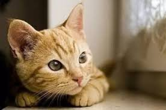
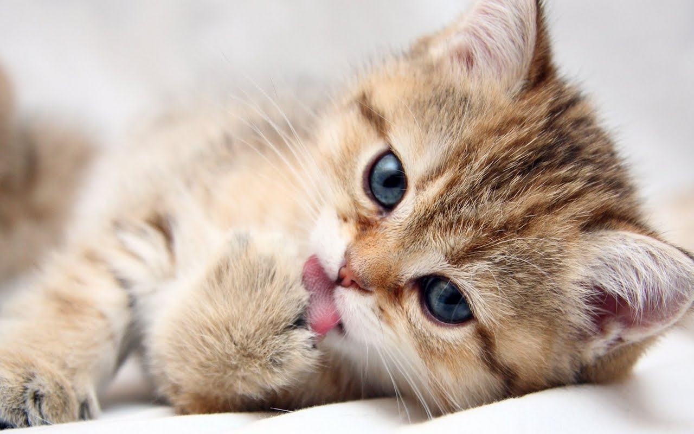

SPONSORSHIP
Sponsorship costs ?5 per year per cat A photo and known details of the chosen cat are given to the sponsor as well as our three newsletters each year The Sponsor a Cat initiative that we launched in 2005 continues to be the main source of income for our home. For just ?5 a year you can sponsor a cat and receive a regular update letter from our cat?as well as cards at Christmas and on your Birthday. It is an ideal gift for someone who is unable to have their own cat. 125 people renewed their sponsorship last year and 35 people became new sponsors . The cats available for sponsor are our long term residents who we have not been able to rehome and now have become our permanent residents. Henry 14 year old male ginger cat who rules the roost Ben ?another male ?white with one ear ?not a pretty looking cat but with a great personality Bonny (tabby female) and Clyde (tabby female) who are sisters Blackie ?black and white female Sparkles ?black and white male Adrian ?10 year old male tortoiseshell Barry ?12 year old black cat
 